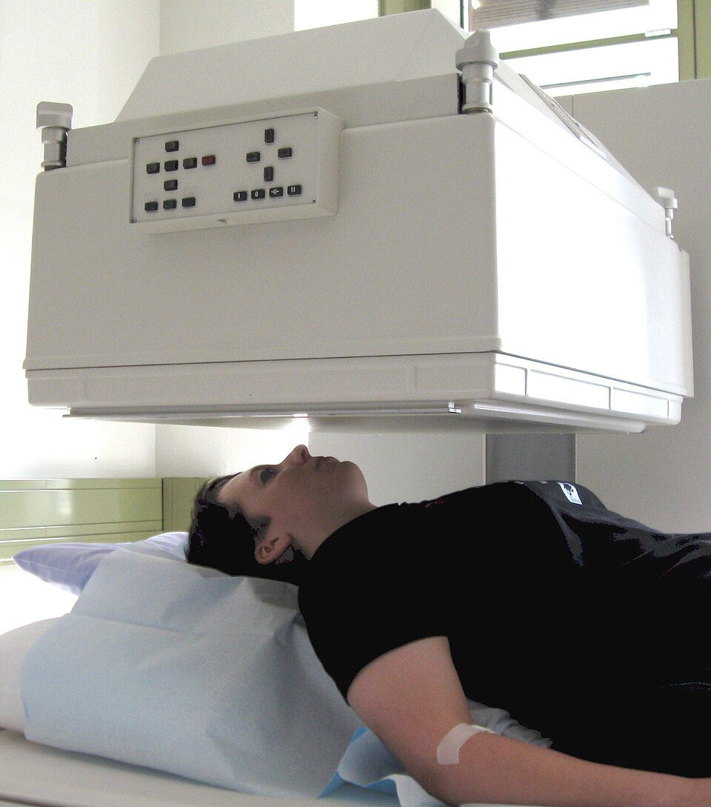

Qué son
La PET (tomografía por emisión de positrones) y la SPECT (tomografía por emisión de fotón único) son pruebas de medicina nuclear. A diferencia de la TC o la resonancia, que muestran la forma del cerebro, estas pruebas muestran su funcionamiento: cuánta glucosa consume, cuánta sangre recibe o si se acumulan ciertas proteínas o faltan ciertos neurotransmisores.
Se inyecta en una vena un radiotrazador, una molécula unida a una pequeña cantidad de sustancia radiactiva, que se dirige a la diana que se quiere estudiar. Una cámara detecta la radiación y reconstruye la imagen.


Los estudios más usados
| Estudio | Qué mide | Para qué sirve |
|---|---|---|
| PET-FDG | Consumo de glucosa | Patrón de las demencias; foco epiléptico; tumores |
| PET de amiloide | Placas de beta-amiloide | Confirmar o descartar alzhéimer |
| PET de tau | Ovillos de tau | Extensión del alzhéimer; investigación |
| DaTSCAN (SPECT) | Transportador de dopamina | Distinguir párkinson de temblor esencial |
| SPECT de perfusión | Flujo sanguíneo | Foco epiléptico durante una crisis; demencias |
| MIBG cardiaca | Inervación del corazón | Apoya Lewy y párkinson |
Demencias
La PET-FDG muestra zonas que funcionan menos, con patrones típicos de cada demencia: en el alzhéimer, la parte posterior de los lóbulos temporales y parietales; en la demencia frontotemporal, los lóbulos frontales y temporales anteriores; en la de Lewy, la región occipital.
La PET de amiloide permite ver en vida las placas que antes solo se veían en la autopsia. Una PET negativa prácticamente descarta el alzhéimer. Una positiva no basta por sí sola, porque muchas personas mayores sin síntomas tienen amiloide. Hoy es una de las pruebas que se usan para elegir a los candidatos a los anticuerpos antiamiloide, junto con la punción lumbar y, cada vez más, los análisis de sangre.
Párkinson y parkinsonismos
El DaTSCAN mide las terminales de las neuronas de dopamina en el estriado. En el párkinson y los parkinsonismos atípicos está reducido (con forma de «punto» en lugar de «coma»); en el temblor esencial, en el parkinsonismo por fármacos o en el psicógeno es normal. No distingue bien el párkinson de los parkinsonismos atípicos.
Epilepsia
En la epilepsia que no responde a fármacos, la PET-FDG entre crisis muestra la zona que funciona menos, y la SPECT durante una crisis (inyectando el trazador en los primeros segundos) muestra la zona que más sangre recibe. Ayudan a localizar el foco antes de la cirugía.
Cómo se hacen
- Puede pedirse ayuno de unas horas (PET-FDG) y controlar la glucosa en diabéticos.
- En el DaTSCAN se toma yodo para proteger el tiroides, y se suspenden algunos fármacos que interfieren (algunos antidepresivos y estimulantes).
- Entre la inyección y la imagen pasan de 30 minutos a varias horas. La adquisición dura 15-45 minutos, tumbado y quieto.
Seguridad
La dosis de radiación es baja, similar a la de una TC, y el trazador se elimina en horas por la orina. Conviene beber agua y evitar el contacto estrecho prolongado con embarazadas y niños pequeños el resto del día. En el embarazo y la lactancia se evitan o se toman precauciones.
Guías y documentos recientes (2024-2026)
- Jack CR Jr, et al. Revised criteria for diagnosis and staging of Alzheimer's disease: Alzheimer's Association Workgroup. Alzheimers Dement. 2024. Enlace. Criterios biológicos de diagnóstico y estadios.
- Alzheimer's Association. Clinical practice guideline for blood-based biomarkers in the diagnostic workup of Alzheimer's disease. Alzheimers Dement. 2025. Enlace. Cuándo usar los análisis de sangre en el diagnóstico.
Fuentes
- Chételat G, et al. Amyloid-PET and 18F-FDG-PET in the diagnostic investigation of Alzheimer's disease and other dementias. Lancet Neurol. 2020;19:951-62.
- Johnson KA, et al. Appropriate use criteria for amyloid PET. Alzheimers Dement. 2013;9:e1-16.
- Postuma RB, et al. MDS clinical diagnostic criteria for Parkinson's disease. Mov Disord. 2015;30:1591-601.
- Sociedad Española de Medicina Nuclear e Imagen Molecular. Información para pacientes.